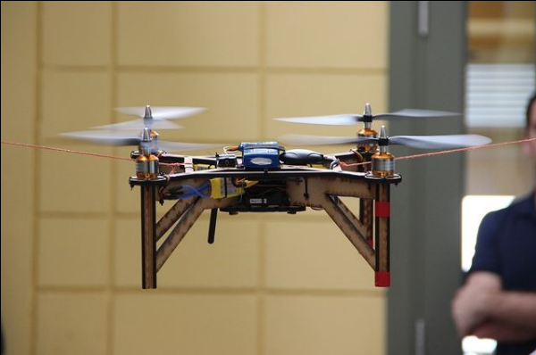

layout: true class: typo, typo-selection --- class: center, middle .north[<br>.right[<img src="imgs/unq.png" width="13%"> <img src="imgs/resized.jpg" width="20%">]<br>] ## Fabricaciones desde el diálogo:<br>Hardware científico abierto y democratización desde la "periferia"<br> ##### <small><span class="code-highlight">Doctorado en Ciencia y Tecnología<span><br>Universidad Nacional de Quilmes<br>Marzo 2021<br></small><br><br><br> .left[<span class="oc-bg-teal-3">Tesista:</span> Julieta C. Arancio<br> <span class="oc-bg-teal-3">Directora:</span> Dra. Valeria Arza<br> <span class="oc-bg-teal-3">Co-director:</span> Dr. Mariano Fressoli] ??? --- # Agenda *** #####<span class="oc-bg-teal-4">**Introducción al problema**</span> ##### Preguntas de investigación ##### Marco teórico ##### Metodología ##### Resultados ##### Contribuciones y limitaciones ##### Implicancias y próximos pasos ??? --- background-image:url(imgs/lock.jpg) .abs-layout.p-m.top-10.left-0.width-47.oc-bg-black.opacity-80.oc-teal-3[ <big>Las herramientas necesarias para hacer ciencia son, en su mayoría, <span class="oc-bg-teal-9">privativas</span></big> ] --- background-image:url(imgs/gosh2.jpg) .abs-layout.p-m.top-20.left-0.width-47.oc-bg-black.opacity-80.oc-teal-2[ <big>Abrir las herramientas científicas para que <i>"cualquier persona las pueda <span class="oc-bg-teal-9">utilizar, obtener, estudiar, modificar, compartir o comercializar</span>"</i></big><br><br> (GOSH, 2016) ] ??? --- class: center, middle .abs-layout.p-m.top-31.left-20.width-60.oc-bg-black.opacity-80.nord14.center[ <big>"Democratización": ¿Otra caja negra?</big> ] ??? --- # Agenda *** ##### Introducción al problema ##### <span class="oc-bg-teal-4">**Preguntas de investigación**</span> ##### Marco teórico ##### Metodología ##### Resultados ##### Contribuciones y limitaciones ##### Implicancias y próximos pasos ??? --- class: center, middle <img src="imgs/gosh.png" width="20%"> <br><br> #### <small><span class="oc-bg-cyan-7 oc-cyan-1">Pregunta 1</span></small><br>¿De qué manera GOSH se constituye como un nicho estratégico de innovación? #### <small><span class="oc-bg-cyan-7 oc-cyan-1">Pregunta 2</span></small><br>¿Cómo los proyectos GOSH promueven la participación de actores nuevos y más diversos en la producción de tecnología “útil”? #### <small><span class="oc-bg-cyan-7 oc-cyan-1">Pregunta 3</span></small><br> ¿En qué medida y cómo los participantes en los proyectos GOSH construyen capacidades? ??? --- # Agenda *** ##### Introducción al problema ##### Preguntas de investigación ##### <span class="oc-bg-teal-4">**Marco teórico**</span> ##### Metodología ##### Resultados ##### Contribuciones y limitaciones ##### Implicancias y próximos pasos ??? --- class: center, middle  ??? --- # Agenda *** ##### Introducción al problema ##### Preguntas de investigación ##### Marco teórico ##### <span class="oc-bg-teal-4">**Metodología**</span> ##### Resultados ##### Contribuciones y limitaciones ##### Implicancias y próximos pasos ??? --- ## **Abordaje**<br><br> ##<span class="oc-bg-lime-1">constructivista/relativista</span> ##<span class="oc-bg-grape-1">tecnologías contingentes y situadas</span> ##<span class="oc-bg-red-1">exploratorio cualitativo</span> ##<span class="oc-bg-teal-1">ciencia abierta</span> --- ## **Estudio del colectivo (P1)** <br> ## Observación participante <span class="oc-bg-lime-1">2017-2019</span> ## Entrevistas a 13 informantes clave <span class="oc-bg-lime-1">2019-2020</span> ## Análisis de documentación <span class="oc-bg-lime-1">2017-2020</span> --- ## **Estudio de casos múltiples (P2, P3)** #### <br>Bloques: <span class="oc-bg-lime-1">académicos y comunitarios</span> #### Al menos una entrevista <span class="oc-bg-lime-1">por cada rol por proyecto</span> #### Análisis de documentación <span class="oc-bg-lime-1">pública</span> #### Observación participante <span class="oc-bg-lime-1">cuando fue posible</span> .abs-layout.left-55.top-50[ <img src="imgs/criterios.png" width="95%">] ??? --- class: center, middle | Gorgas tracker | Open Flexure | Vuela | KossamTor | |-|-|-|-| | Perú | Reino Unido y Tanzania | Chile | Camerún | | Universidad Peruana Cayetano Heredia | STICLab, Ifakara Health Institute | Centro vecinal Melipilla y PROCISUR | Mboa Lab | | Localizador GPS personalizado para estudiar la dispersión de la malaria con las comunidades indígenas de la Amazonía | Microscopio apto investigación a partir de impresión 3D de bajo costo para el diagnóstico de malaria | Drones abiertos accesibles, de bajo costo para ciencia comunitaria | Incubadoras de bajo costo para producción familiar de yogur | | <img src="imgs/gorgas2.png" width="60%"> | <img src="imgs/of.png"> |  | <img src="imgs/kt.png"> | ??? --- class: middle, center <img src="imgs/opensci.png" width="140%"> ??? --- # Agenda *** ##### Introducción al problema ##### Preguntas de investigación ##### Marco teórico ##### Metodología ##### <span class="oc-bg-teal-4">**Resultados**</span> ##### Contribuciones y limitaciones ##### Implicancias y próximos pasos ??? --- class: center, middle .north.left[<span class="oc-bg-lime-2">Pregunta 1</span>] ¿De qué manera GOSH se constituye como un nicho estratégico de innovación? | Ciencia abierta | Justicia ambiental | Transhacktivismo | Pedagogías críticas | |:-:|:-:|:-:|:-:| | Transparencia y legitimación | Metodologías de organización | Elemento lúdico creativo | Metodologías de colaboración | --- ## Lo lúdico como cohesión y como elaboración de objetos deseables, que son pieza de comunicacion en si mismos --- ## Lecciones de otros MIB Pluralidad de framings y fragmentación Tensiones maximas ante la institucionalildad La apertura como un habilitador de trayectorias alternativas ??? --- # Nuevos participantes ¿Cómo los proyectos GOSH promueven la participación de actores nuevos y más diversos en la producción de tecnología “útil”? #### roles: usuarios, desarrolladores y fabricantes, segun objetivos #### La diversidad en función de los espacios, tanto de genero (academia cero) como de expertise (aumenta lejos de la academia) #### Los roles híbridos académicos activistas facilitando el diálogo #### participan diferente en funcion de los objetivos (mas participation no es neceriamente mas beneficio directo) --- Cómo? #### El denominador común: modular, iterativo, orientado a usuaria, abierto #### La formación de pares como el instrumento de creación de un idioma común #### Documentacion de calidad que refleja procesos intensivos de pares #### En evolución constante, multiples versiones --- ¿En qué medida y cómo los participantes en los proyectos GOSH construyen capacidades? Para qué? (permite evaluar proyectos más profundamente) #### Capacidades que varían de acuerdo a los objetivos #### Abrir espacio a nuevas ideas #### Ganar autonomía #### Generar ingresos ??? --- # Conclusiones Se trata de procesos que incorporan nuevos actores, habilitando diálogos que se materializa en problemas de conocimiento y tecnologías altamente contextualizadas, robustas, de forma diferente segun sus objetivos Como se materializa? - materiales disponibles - interfaces accesibles - reparables localmente y personalizables - en constante adaptación para responder a nuevas preguntas o problemas Claves: libre circulacion de la info, formacion de pares, metodos iterativos que bajan barreras de acceso --- Construcción de problemas de conocimiento que reflejan más fielmente los problemas sociales que quieren abordar Permite colaboraciones inesperadas, incluso asincrónicas (Vuela y PROCISUR) | | Open Flexure | Vuela | KossamTor | |:-:|:-:|:-:|:-:| | incorporó la movilidad humana como eje de análisis en el Plan Malaria Cero del Ministerio de Salud peruano | detectaron limitante en numero de tecnicos, no de equipos: desarrollo de IA para automatizar tareas rutinarias | la interacción con investigadores permitió que la comunidad construya un problema de conocimiento a partir de una situación de riesgo que los preocupa y por la cual vienen reclamando sin éxito | reorientó el objetivo principal del proyecto original desde vender la incubadora a las universidades hacía la ' de yogur por parte de las mujeres de la comunidad vecina | --- # Agenda *** ##### Introducción al problema ##### Preguntas de investigación ##### Marco teórico ##### Metodología ##### Resultados ##### <span class="oc-bg-teal-4">**Contribuciones y limitaciones**</span> ##### Implicancias y próximos pasos ??? --- # Contribuciones - Teóricas: reforzar la agencia artefactual y en análisis feminista en los estudios de MIB - Metodológicas: uso de herramientas de ciencia abierta en STS - Empíricas: - GOSH - Iniciativas del sur --- # Agenda *** ##### Introducción al problema ##### Preguntas de investigación ##### Marco teórico ##### Metodología ##### Resultados ##### Contribuciones y limitaciones ##### <span class="oc-bg-teal-4">**Implicancias y próximos pasos**</span> ??? --- # Implicancias Práctica - Factores que determinan diversidad - Factores que influyen en documetnacion de calidad - Nuevas formas de evaluar proyectos HCA Políticas - Integrar OSH como eje transversal - Conexion entre comunidades apertura ciencia - Fomento en educación Investigación - mejor evaluacion de capacidades - explorar factores que favorecen este tipo de OSH en academia - diferencias norte sur - potencial disruptivo en academia --- class: center .north[<br><br><img src="imgs/unq.png" width="16%"> <img src="imgs/resized.jpg" width="25%"><br><br><br>] #### <big><span class="oc-bg-teal-4">**¡Muchas Gracias!**</span></big> <br><br><br><br><br> .right[<i class="ri-global-fill"></i> julieta.aranc.io <br><i class="ri-mail-fill"></i> jarancio@unsam.edu.ar<br><i class="ri-twitter-fill"></i> @cassandreces]